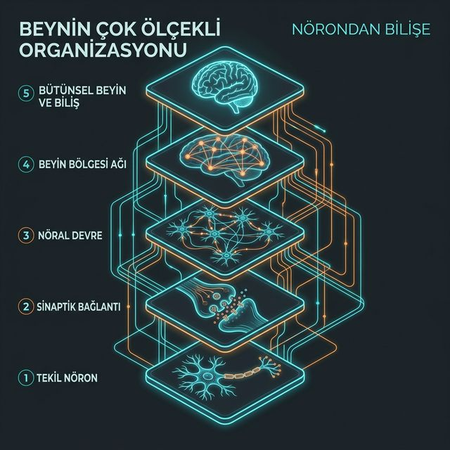

1
Tekil Nöron
Sistemin en temel sinyal işleme birimi. Elektrokimyasal akımı ileten ve hiyerarşinin temel yapı taşını oluşturan "atomik" katman.
2
Sinaptik Bağlantı
Hücrelerin birbirleriyle "bilgi protokollerini" paylaştığı elektrokimyasal arayüz. Veri burada elektrikten kimyasal koda dönüşür.
3
Nöral Devre
Belirli bir işlevi (örn: refleks) üretmek için senkronize çalışan, özelleşmiş nöron grupları. Organizasyonun ilk fonksiyonel adımı.
4
Beyin Bölgesi Ağı
Korteks gibi bölgelerde, binlerce devrenin oluşturduğu geniş entegrasyon merkezleri ve kompleks fonksiyonel modüller.
5
Bütünsel Beyin ve Biliş
Tüm katmanların merkezi sinir sisteminde entegre olduğu en üst seviye; canlının çevreyle etkileşimi ve zihinsel süreçlerin toplam çıktısı.
